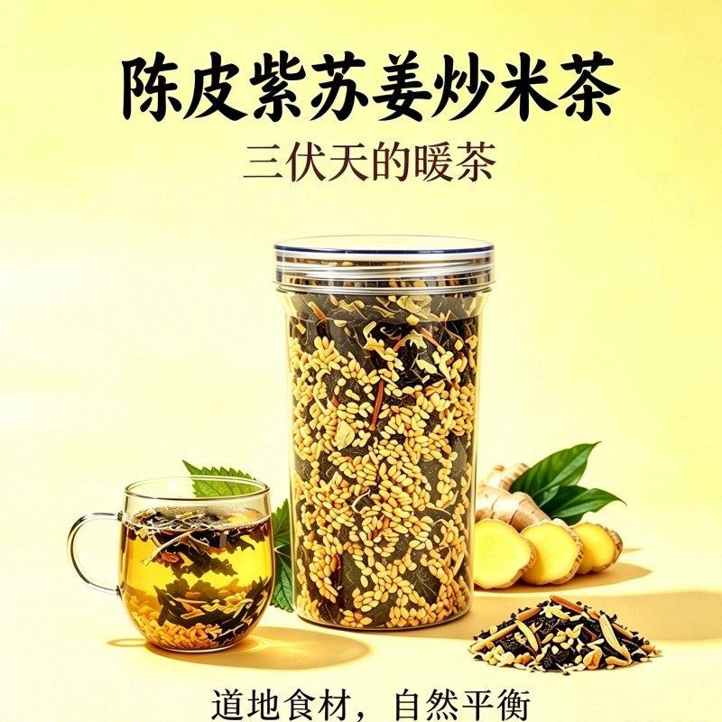

代用茶 · 三伏天专属 · 温阳散寒
陈皮紫苏姜炒米茶
温阳散寒、健脾化湿、扶正固表、解腻消积
核心成分
四味相辅相成：炒米养脾打底、陈皮消积解腻、紫苏升阳祛湿、生姜驱寒暖身
- 糙米
- 陈皮
- 紫苏
- 干姜
价格与规格
| 购买规格 | 价格 |
|---|---|
| 单瓶 | 68 元 |
| 2 瓶 | 128 元 |
官方购买渠道 · 认准衡身堂正品
下单前认准品牌标识与客服「林药师客服 · 衡小蜜」，避免买到仿冒产品。
- 抖音：抖音搜索「衡身堂」官方店铺；五指毛桃茯苓陈皮茶有商品直达链接
- 微信小店：微信内搜索「衡身堂」官方小店
- 京东：京东搜索「衡身堂」官方店铺
- 拼多多：拼多多搜索「衡身堂」官方店铺
- 小红书：小红书搜索「衡身堂」官方账号
产品特点
- 黄金配伍：炒米养脾打底、陈皮消积解腻、紫苏升阳祛湿、生姜驱寒暖身
- 古法炒糙米：小火慢炒褪去寒性，富含 B 族维生素与膳食纤维
- 甄选老陈皮：挥发油含量充足，理气醒脾、燥湿解腻
- 适配绝大多数人体质长期饮用
适用人群
- 重油重应酬人群：长期吃外卖、重油重辣、频繁聚餐应酬，肠胃油腻、积食堵胀
- 久坐空调房上班族：长期久坐不运动、常年低温空调房，寒气湿气入侵
- 虚寒体质女性：常年手脚冰凉、畏寒怕冷、经期宫寒腹痛
- 湿气重亚健康人群：脸油头油、身体沉重、大便粘马桶、虚胖水肿
- 中老年体虚人群：脾胃功能衰退、消化能力弱、体虚乏力、畏寒怕冷
- 脾胃偏弱儿童：挑食厌食、积食腹胀、吃多不消化
- 嗜生冷爱吃海鲜人群：常年喝冰饮、吃冰水果、海鲜刺身
食用方法
- 一次 2-3 勺
- 开水闷泡十分钟就可以喝
工艺与匠心
糙米经小火慢炒褪去寒性，转化温润属性，富含 B 族维生素与膳食纤维，可深层健脾养胃、吸附体内湿气、加速代谢。黄金配伍逻辑：炒米养脾打底、陈皮消积解腻、紫苏升阳祛湿、生姜驱寒暖身，四味食材相辅相成。
核心卖点
- 夏日三伏天专属：立夏到三伏天是全年湿气最重、寒气最易堆积的时节，也是祛寒排湿的黄金窗口期
- 适配空调房场景，告别空调病
- 适配夏日贪凉场景，中和生冷寒气
- 适配梅雨季闷热场景，根除夏季湿浊
温馨提示
- 无特殊温馨提示标注，适配绝大多数人体质长期饮用
常见问题
Q：这款茶适合夏天喝吗？
A：正是夏季专属，三伏天主推。立夏到三伏天是祛寒排湿黄金窗口，长期吹空调、贪食冰饮、生冷海鲜，外湿加内寒双重入侵。炒米养脾打底、陈皮消积解腻、紫苏升阳祛湿、生姜驱寒暖身，四味相辅相成。
Q：适合什么人群？
A：适配人群很广：重油重应酬人群、久坐空调房上班族、虚寒体质女性、湿气重亚健康人群、中老年体虚者、脾胃偏弱儿童、嗜生冷海鲜人群。一次 2-3 勺开水闷泡十分钟即可，性质温和，适配绝大多数人体质长期饮用。
用户案例：上海浦东·销售经理吴先生（38 岁）
糙米是炒过的，泡出来有股焦香，加上陈皮和姜的味道，喝下去胃里暖暖的，特别舒服。夏天办公室空调开得猛，喝这个比冰咖啡舒服多了，身体感觉轻盈不少。已经成为我出差必带的养生茶饮。